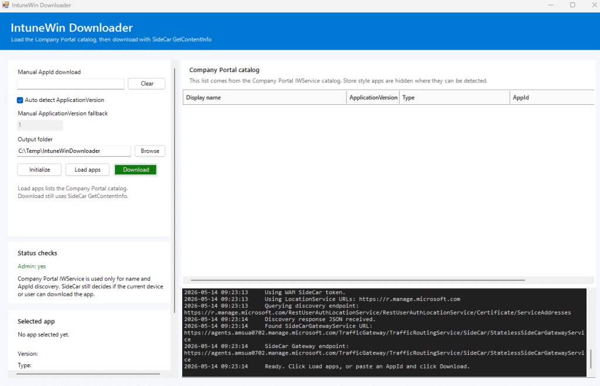
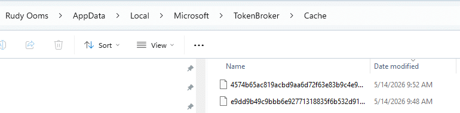
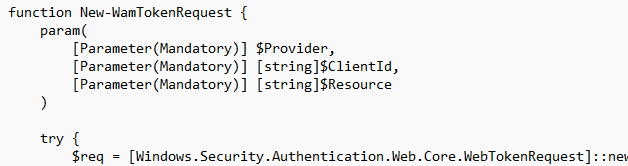
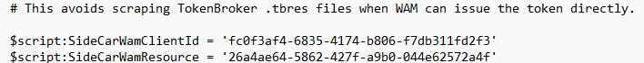
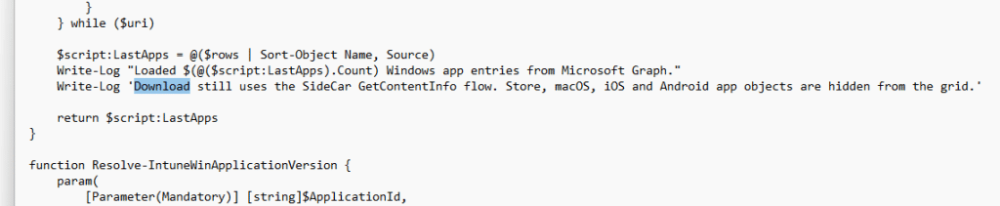
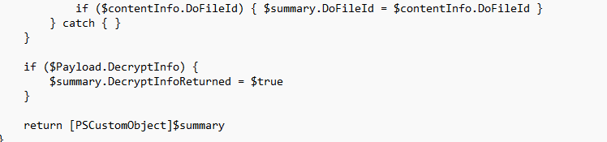
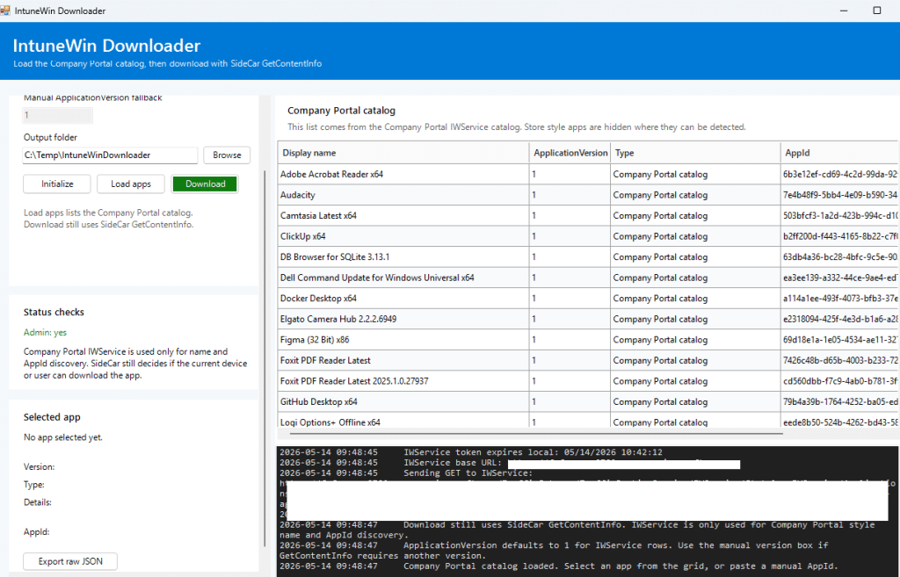

In the first version of the IntuneWin Downloader, the goal was simple: Download IntuneWin content from Intune and recover the original Win32 app source files when they were no longer available locally. That blog walked through the IME style flow: find the Intune MDM device certificate, discover the SideCar Gateway, request ContentInfo, download the encrypted content, decrypt it, and extract the package. It also made one thing very clear: this only works when the app is still assigned to the device or user. It was never about bypassing Intune assignments.
That first version worked, but it still felt a bit rough around the edges. You needed the AppId, you needed the right token to be present in the local TokenBroker cache, and when the cache contained multiple tokens, picking the right one could become a bit of a gamble.
So I went back into the IME flow. Not to change what the tool was doing, but to make the IntuneWin Downloader behave more like the IME and Company Portal. With it… The tool looks like this.


The first version: chasing the .tbres token
The first version of the tool relied on the local TokenBroker cache.

The idea was straightforward. The Intune Management Extension already requires a bearer token when communicating with the SideCar Gateway. That token could often be found in the user’s local TokenBroker cache as a .tbres file.


So the script would look through the cache, decrypt ResponseBytes using DPAPI in the current user context, search for a JWT, and then use that token for the SideCar calls. That worked, but it had some weak spots.
The token had to exist in the tbres cache. The Intunewin Download script had to run as the same user who owned that cache. The cache had to contain a still-valid token. And when the decrypted response contained multiple JWTs, the script had to ensure it did not grab the wrong one. That last part is where things became interesting. A token can be valid and not expired, yet still be completely useless for the endpoint you are calling. If the audience does not match what SideCar expects, the request will fail anyway. So, yes, the .tbres approach was useful. But it was not the cleanest way forward.
The moment WAM changed the IntuneWin Download
The newer version no longer depends on scraping .tbres files. Instead of hunting for a cached token, the tool now asks WAM directly.


WAM, or Web Account Manager, is the Windows broker layer that apps use to request tokens for signed-in accounts. The important part is that the tool no longer needs to rely on the assumption that the right token already exists in the cache. It can request the token itself, using the correct client and resource pair.
That changed the tool from this:
- Find TokenBroker cache
- Decrypt .tbres
- Extract token
- Hope it is the right one
- Call SideCar
into this:
- Ask WAM for the right token
- Use the MDM device certificate
- Call the right Intune client-side endpoint
- Download the content
- Process the package
That sounds small, but it makes the flow much more reliable.
Two different lanes, two different tokens to download the IntuneWin
The next lesson was that “Intune token” is too vague. The Company Portal and IME do not use one magic token for everything. The Company Portal catalog and the IME SideCar flow are different lanes, and each lane expects a token with the correct audience.
For the Company Portal catalog lane, the tool uses the Company Portal client and the IWService resource.
Company Portal
ClientId = 9ba1a5c7-f17a-4de9-a1f1-6178c8d51223
Resource = b8066b99-6e67-41be-abfa-75db1a2c8809


That token is used to talk to the IWService catalog endpoint. This is the lane that helps us list apps with a friendly name and an AppId, without having to manually copy the AppId from the Intune portal. For the IME SideCar lane, the tool uses the IME SideCar client and resource pair.
IME SideCar
ClientId = fc0f3af4-6835-4174-b806-f7db311fd2f3
Resource = 26a4ae64-5862-427f-a9b0-044e62572a4f

That token is used for the SideCar GetContentInfo flow. This split is important. The Company Portal token can help you discover apps, but it is not the token that SideCar wants when you request content. The SideCar token can help you resolve content, but it is not the cleanest way to list the Company Portal catalog. So the new tool uses both lanes for what they do best.
Discovering the apps with the Company Portal catalog
The first version required you to know the AppId. That was annoying. Yes, you could get it from the Intune portal. Yes, you could use Graph. But the Company Portal already has a catalog view of apps relevant to the user and device. So the better approach was to use the Company Portal catalog lane for discovery… which just worked perfectly.
The tool now requests a WAM token for the Company Portal IWService resource and calls the IWService catalog endpoint. From there, it builds the app list in the UI. That gives us the display name and AppId without having to manually search for them. The important thing is that this is only used for discovery. It does not download anything yet. It only answers the question: Which apps does the Company Portal know about?

The download still happens through the IME SideCar flow.
Downloading the IntuneWin still belongs to SideCar
Once you select an app, the tool switches lanes. It takes the selected AppId and calls SideCar GetContentInfo using the SideCar WAM token and the local Intune MDM device certificate. That part still follows the same idea as the original blog. The device identity matters. The MDM certificate matters. The SideCar Gateway matters. The app assignment still matters.


The tool first discovers the correct SideCar Gateway URI for the tenant and scale unit. Then it sends the GetContentInfo request for the selected AppId and ApplicationVersion.


If SideCar allows the current device or user to resolve the content, it returns the metadata needed to download and process the package. If SideCar rejects it, the tool does not magically work around that.
And that is exactly how it should be.
Regular Win32 apps versus catalog apps
The original IntuneWin flow is built around encrypted content. A regular Win32 app returns encrypted content metadata. The tool downloads the .intunewin content, uses the returned encryption information, decrypts the payload with AES, and extracts the resulting zip.
That is the classic path. But Enterprise App Management catalog apps can behave differently. For some of those apps, the metadata returns: ProfileIdentifier = NoEncryption
That changes the processing flow. When NoEncryption is enabled, there is no AES key or IV to use in the classic way. The tool should not keep trying to decrypt something that was not returned as an encrypted IntuneWin payload. Instead, it treats the downloaded content as the decoded zip and extracts it directly.
That was one of those small details that only becomes obvious once the tool starts working against more than just manually uploaded Win32 apps.
The current flow looks like this. The tool starts by initializing the local Intune identity context. It locates the MDM device certificate and extracts the device identity. It then discovers the SideCar Gateway URI for the device’s Intune environment.
For app discovery, it requests a Company Portal IWService token through WAM and loads the Company Portal catalog. That gives the UI a clean list of apps with display names and AppIDs.


For downloading, it requests an IME SideCar token through WAM, calls GetContentInfo with the MDM device certificate, downloads the content, and then processes it based on the returned metadata. If the metadata contains regular encryption information, the tool decrypts and extracts the IntuneWin content.If the metadata says NoEncryption, it skips AES decryption and extracts the downloaded zip directly.
And because large app packages can take some time, the tool now shows a separate download progress dialog instead of making the UI look frozen while the content is being downloaded.

Please Note: You can download the Intunewin Downloader here.
Conclusion
Recovering IntuneWin content from Intune was already possible, as long as the app was still assigned and the device could resolve the content. The first version showed that by following the IME flow and manually pulling the pieces together. This newer version takes the next step.
It uses WAM instead of hunting through .tbres files, uses the Company Portal catalog for AppId discovery, uses the IME SideCar lane for content resolution, and handles both encrypted Win32 packages and catalog apps that return NoEncryption.